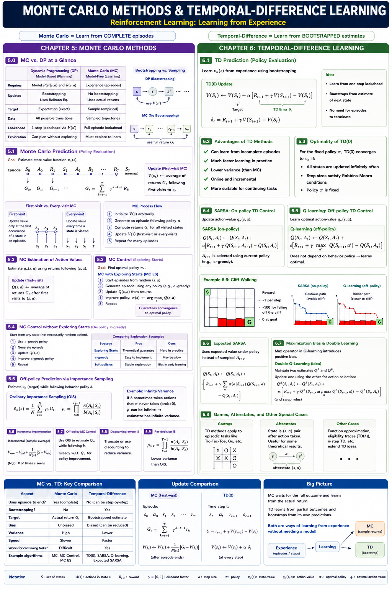
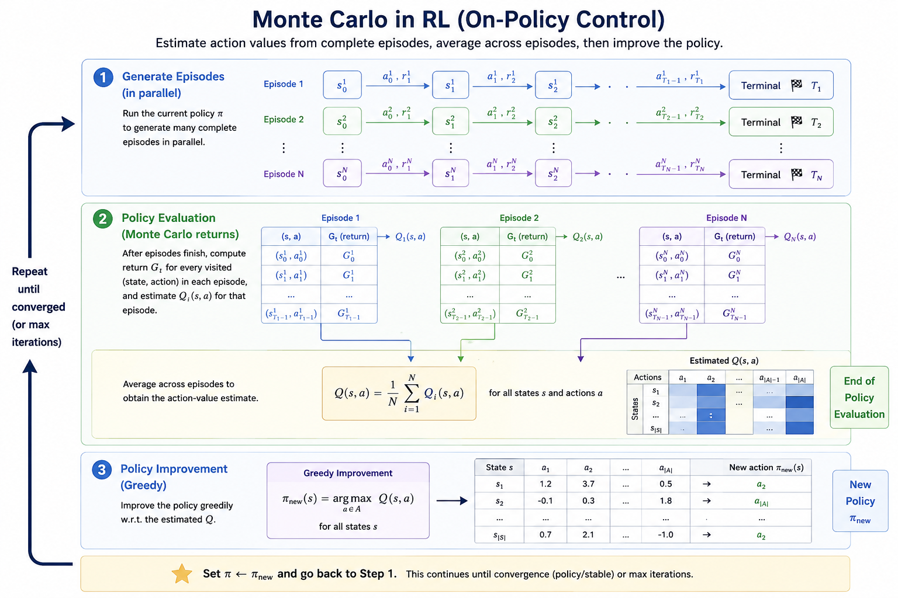
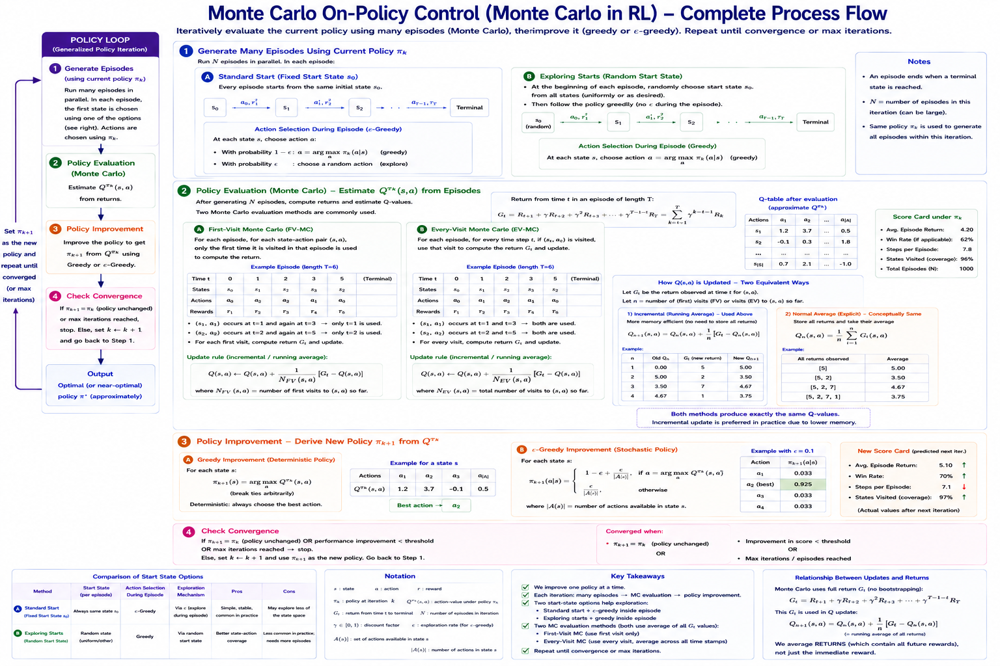

Reference: Sutton & Barto, Chapters 5 & 6 (2nd Edition)

Monte Carlo (MC) methods learn from experience—sample sequences of states, actions, and rewards from actual or simulated interaction with an environment. Unlike Dynamic Programming, they require no model (\(P\) and \(R\)).
To understand Monte Carlo, we must contrast it with the Dynamic Programming (DP) methods from the previous lecture. The transition from DP to MC represents the move from Planning (using a model) to Learning (using experience).
In DP, the environment is a known Data Structure. In MC, the environment is a Black Box.
# --- DYNAMIC PROGRAMMING (Model-Based) ---
# We have a dictionary telling us exactly what will happen.
# P[state][action] = [(probability, next_state, reward, is_terminal), ...]
P = {
4: { # From State 4 (Center)
0: [(1.0, 1, -1, False)], # Action UP leads to State 1 with 100% prob
1: [(1.0, 7, -1, False)], # Action DOWN leads to State 7
2: [(1.0, 3, -1, False)], # Action LEFT leads to State 3
3: [(1.0, 5, -1, False)] # Action RIGHT leads to State 5
}
}
# DP Update Logic: Uses the internal dictionary
def dp_update(s, a, V, gamma=0.9):
expected_value = 0
for prob, next_s, reward, done in P[s][a]:
expected_value += prob * (reward + gamma * V[next_s])
return expected_value
# --- MONTE CARLO (Model-Free) ---
# We have NO dictionary. We just interact with an 'env' object.
def mc_experience(s, a, env):
# We don't know where we will end up until we call .step()
next_s, reward, done = env.step(a)
return next_s, reward, doneAnalogy: - DP is like asking a traveler: "What is the total distance to the destination?" and the traveler answers: "It is 5 miles to the next town, plus whatever the sign in that town says the remaining distance is." (One-step lookahead + Bootstrapping). - MC is like actually driving the entire way to the destination and then looking at your odometer to see exactly how far you traveled. (Multi-step/Full-episode experience).
A common question is: "If MC doesn’t bootstrap, does the Bellman Equation still matter?" * Theoretically: YES. The Bellman Equation defines what \(V(s)\) is. It is the target we are trying to reach. * Computationally: NO. The MC algorithm does not use the recursive property (\(V(s) \leftarrow R + V(s')\)). Instead, it uses the Law of Large Numbers. It treats the total return \(G_t\) as a random variable and simply calculates its empirical mean.
MC “validates” the Bellman Equation through experience rather than “solving” it through recursion.
| Aspect | Dynamic Programming (DP) | Monte Carlo (MC) |
|---|---|---|
| Model (P, R) | Required (Model-Based) | Not Required (Model-Free) |
| Update Rule | Bellman Equation (Bootstrapping) | Average Returns (No Bootstrapping) |
| Temporal Scope | One-step Lookahead | Full Episode (to Terminal) |
| Computation | Expected Value (Integration) | Sample Means (Averaging) |
| Prerequisite | Knowledge of “Physics” | Interaction with “Physics” |
MC prediction learns the state-value function \(v_\pi\) for a given policy \(\pi\) by averaging the returns observed after visiting a state.
While both methods use the same basic averaging formula, the set of returns they consider is different. We estimate the action-value function \(Q(s, a)\) using the count of visits \(N(s, a)\):
\[Q(s, a) = \frac{1}{N(s, a)} \sum_{i=1}^{N(s, a)} G_i(s, a)\]
In practice, storing every return \(G\) in a list to calculate the average is memory-intensive. Instead, we use an incremental update rule (rolling average):
\[Q(S_t, A_t) \leftarrow Q(S_t, A_t) + \frac{1}{N(S_t, A_t)} \left[ G_t - Q(S_t, A_t) \right]\]
Computational Superiority: 1. Constant Memory (\(O(1)\)): We only need to store two numbers per state-action pair: the current estimate \(Q\) and the visit count \(N\). We do not need to store the entire history of rewards. 2. Constant Time (\(O(1)\)): The update happens in a single mathematical operation regardless of how many episodes have passed. 3. Non-stationary Tasks: This form easily adapts to non-stationary environments by replacing \(\frac{1}{N}\) with a constant step-size parameter \(\alpha\) (learning rate).
| Feature | First-visit MC | Every-visit MC |
|---|---|---|
| Statistical Bias | Unbiased (Purest estimate). | Initially Biased (but converges to unbiased). |
| Variance | Higher (Fewer samples). | Lower (More samples per episode). |
| Simplicity | Requires a “visited” check. | No check needed; simpler to implement. |


import numpy as np
from collections import defaultdict
def first_visit_mc_q_prediction(pi, env, num_episodes, gamma=1.0):
"""
First-visit MC prediction, for estimating Q ≈ q_π
"""
Q = defaultdict(lambda: np.zeros(env.action_space.n))
N = defaultdict(lambda: np.zeros(env.action_space.n)) # Visit counts
returns_sum = defaultdict(lambda: np.zeros(env.action_space.n))
for _ in range(num_episodes):
# 1. Generate an episode following policy pi
episode = []
state, _ = env.reset()
done = False
while not done:
action = pi(state)
next_state, reward, term, trunc, _ = env.step(action)
episode.append((state, action, reward))
state, done = next_state, term or trunc
# 2. Process episode backwards
G = 0
sa_in_episode = [(x[0], x[1]) for x in episode]
for t in range(len(episode) - 1, -1, -1):
s_t, a_t, r_tp1 = episode[t]
G = gamma * G + r_tp1
# Check if this is the first visit to (s_t, a_t) in this episode
if (s_t, a_t) not in sa_in_episode[:t]:
returns_sum[s_t][a_t] += G
N[s_t][a_t] += 1
Q[s_t][a_t] = returns_sum[s_t][a_t] / N[s_t][a_t]
return Q
def every_visit_mc_q_prediction(pi, env, num_episodes, gamma=1.0):
"""
Every-visit MC prediction, for estimating Q ≈ q_π
"""
Q = defaultdict(lambda: np.zeros(env.action_space.n))
N = defaultdict(lambda: np.zeros(env.action_space.n))
returns_sum = defaultdict(lambda: np.zeros(env.action_space.n))
for _ in range(num_episodes):
# 1. Generate episode (same logic as above)
# 2. Process episode backwards
G = 0
for t in range(len(episode) - 1, -1, -1):
s_t, a_t, r_tp1 = episode[t]
G = gamma * G + r_tp1
# NO CHECK: Update every time (s_t, a_t) appears
returns_sum[s_t][a_t] += G
N[s_t][a_t] += 1
Q[s_t][a_t] = returns_sum[s_t][a_t] / N[s_t][a_t]
return QIn Blackjack, the state is defined by the player’s sum (12–21), the dealer’s showing card (ace–10), and whether the player has a "usable ace." We evaluate a policy that sticks only on 20 or 21.
# From assets/blackjack_mc.py
# Q-value update for state s and action a
idx = (p_sum - 12, d_card - 1, int(u_ace))
returns_sum[idx][action] += G
N[idx][action] += 1
Q[idx][action] = returns_sum[idx][action] / N[idx][action]If a model is not available, it is particularly useful to estimate action values (\(q_*\)) rather than state values (\(v_*\)). - Without a model, state values alone are not sufficient for action selection (you can’t see the one-step lookahead). - The exploration problem: If we use a deterministic policy, some state-action pairs may never be visited. We must ensure continual exploration.
The general pattern of MC control is Generalized Policy Iteration (GPI): 1. Evaluation: Use MC to estimate \(q_\pi\). 2. Improvement: Make the policy greedy w.r.t. \(q_\pi\).
Common Pitfall: Average vs. Max G Students often mistake MC for a search for the “single best episode.” - Wrong Logic: “Run 10 episodes and pick the policy that gave the single highest \(G\).” (Vulnerable to noise/luck). - Correct Logic: “Run many episodes and update \(\pi(s)\) to pick the action with the highest average \(G\).” (Robust to noise).
We maximize the Expected Return (\(\mathbb{E}[G]\)), not a single sample return (\(G_{sample}\)).
To guarantee exploration, we assume that every state-action pair has a non-zero probability of being the start of an episode. - Example 5.3: Blackjack with Exploring Starts converges to the optimal policy, effectively learning when to hit or stick.
# From assets/mc_gpi_demonstration.py
# Pedagogical demonstration of GPI in Monte Carlo ES
# 1. Generate an episode with Exploring Starts
# 2. Backtrack to calculate Returns (G)
# 3. Update Policy: pi(s) = argmax_a Q(s,a)In real-world applications, we cannot always teleport the agent to a random state. To ensure exploration without “Exploring Starts,” we must use a Stochastic Policy.
| Strategy | Exploring Starts (ES) | \(\epsilon\)-Greedy (On-Policy) |
|---|---|---|
| Assumption | Can start the agent in ANY state/action. | Agent must start from a FIXED state. |
| Policy Type | Deterministic (always picks
argmax). |
Stochastic (usually argmax,
rarely random). |
| Logic | "Force" exploration via the starting point. | "Force" exploration via the action selection. |
| Practicality | Low (hard to reset real systems). | High (how real robots/agents learn). |
How can we learn about a target policy \(\pi\) while following a different behavior policy \(b\)? This is off-policy learning.
Think of it as: You want to know how a Professional (\(\pi\)) would play, but your only data is from a Beginner (\(b\)).
Pro-Tip: Knowing vs. Estimating \(b\) You do not estimate the behavior policy \(b\) from the episodes. You must define it (e.g., as a uniform random policy). To calculate the ratio \(\rho\), you need to know the exact probability \(b(a|s)\) used to generate the data. If you don’t know the exact math of the beginner, you cannot accurately estimate the professional.
When the beginner (\(b\)) takes an action, we ask: “How much more (or less) likely was the professional to take that same action?” \[\rho = \frac{\pi(a|s)}{b(a|s)}\]
For a whole episode (from time \(t\) to \(T\)), we multiply the ratios of every action taken. The Capital Pi (\(\Pi\)) symbol represents a product: \[\rho_{t:T-1} \doteq \prod_{k=t}^{T-1} \frac{\pi(A_k|S_k)}{b(A_k|S_k)}\]
Expanded Series Form: \[\rho_{t:T-1} = \frac{\pi(A_t|S_t)}{b(A_t|S_t)} \times \frac{\pi(A_{t+1}|S_{t+1})}{b(A_{t+1}|S_{t+1})} \times \dots \times \frac{\pi(A_{T-1}|S_{T-1})}{b(A_{T-1}|S_{T-1})}\]
We multiply each observed return (\(G_t\)) by its ratio (\(\rho\)) and take the standard average over \(n\) episodes: \[V(s) = \frac{\sum_{t \in \mathcal{T}(s)} \rho_{t:T(t)-1} G_t}{|\mathcal{T}(s)|}\]
Instead of dividing by the number of episodes, we divide by the sum of the ratios: \[V(s) = \frac{\sum_{t \in \mathcal{T}(s)} \rho_{t:T(t)-1} G_t}{\sum_{t \in \mathcal{T}(s)} \rho_{t:T(t)-1}}\]
| Feature | Ordinary (OIS) | Weighted (WIS) |
|---|---|---|
| Bias | Unbiased | Biased (converges to zero bias) |
| Variance | High/Infinite | Lower/Stable |
| Practicality | Low | High |
Ordinary importance sampling can have infinite variance. If the importance-sampling ratio has a mean greater than 1, its variance can grow without bound.
# From assets/infinite_variance.py
# Visualizes the extreme fluctuations of Ordinary IS in Example 5.5Weighted importance sampling can be implemented incrementally: \[W_{n+1} \doteq W_n + \rho_n\] \[V_{n+1} \doteq V_n + \frac{\rho_n}{C_n} [G_n - V_n]\] Where \(C_n\) is the cumulative sum of weights.
Uses the behavior policy to generate episodes and the target policy (greedy) for learning.
The goal is to learn the optimal policy \(\pi^*\) while following an exploratory behavior policy \(b\). Here is exactly what happens in every iteration:
graph TD
subgraph Behavior [Behavior Policy b - The Beginner]
B[Stochastic/Random Policy] --> Gen[Generate Episode]
end
subgraph Stream [Data trajectory]
Gen --> Traj[(S, A, R trajectory)]
end
subgraph Engine [Importance Sampling Engine]
Traj --> Ratio["Calculate Ratio: ρ = π/b"]
Ratio --> Ret["Calculate Return: G"]
Ret --> Weight["Weight Return: ρ * G"]
Weight --> Update["Update Q(s,a) & N(s,a)"]
end
subgraph Target [Target Policy π - The Professional]
Update --> Improve[Improvement: argmax Q]
Improve --> TargetPol[Deterministic Greedy Policy]
TargetPol -.->|Policy Ratio| Ratio
end
Update -.->|Learning Loop| B
Limitation: It only learns from the tails of episodes—after the behavior policy takes an action that the target policy would not have taken, the importance-sampling ratio becomes zero.
Limitation: It only learns from the tails of episodes—after the behavior policy takes an action that the target policy would not have taken, the importance-sampling ratio becomes zero.
Standard IS treats the return \(G_t\) as a single unit. However, if \(\gamma < 1\), the return is composed of discounted rewards. This section discusses how to decompose the ratio to reduce variance by acknowledging that future rewards are less affected by earlier actions.
Further refines IS by applying the ratio only to the rewards that actually depend on the actions taken at that time: \[\mathbb{E}[\rho_{t:T-1} G_t] = \mathbb{E} \left[ \sum_{k=t}^{T-1} \rho_{t:k} R_{k+1} \right]\]
Temporal-Difference (TD) learning is a combination of MC and DP. Like MC, it learns from experience. Like DP, it bootstraps—updates estimates based on other estimates.
The simplest TD method, TD(0), updates the value of a state based on the immediate reward and the estimated value of the next state: \[V(S_t) \leftarrow V(S_t) + \alpha [R_{t+1} + \gamma V(S_{t+1}) - V(S_t)]\]
Backup Diagram for TD(0):
graph TD
s((s)) --> r(R) --> s_next((s'))
If we have a fixed set of experience (Batch Training), TD(0) converges to the Certainty-Equivalence estimate—the estimate that would be correct if the observed transitions were the true dynamics. - Example 6.4: Random Walk batch results (Figure 6.2) show TD(0) outperforming MC.
# From assets/batch_learning.py
# Implements Batch TD vs Batch MC for Figure 6.2Updates the action-value function based on the actions actually taken by the current policy (S, A, R, S’, A’): \[Q(S_t, A_t) \leftarrow Q(S_t, A_t) + \alpha [R_{t+1} + \gamma Q(S_{t+1}, A_{t+1}) - Q(S_t, A_t)]\]
One of the most important breakthroughs in RL. It learns the optimal action-value function \(q_*\) directly, independent of the policy being followed: \[Q(S_t, A_t) \leftarrow Q(S_t, A_t) + \alpha [R_{t+1} + \gamma \max_a Q(S_{t+1}, a) - Q(S_t, A_t)]\]
Contrasts Sarsa (safe path) vs Q-learning (optimal but risky path). Sarsa accounts for the exploration it actually does, whereas Q-learning assumes it will eventually act optimally.
Instead of using a sample action \(A_{t+1}\), it uses the expected value over all actions under the current policy: \[Q(S_t, A_t) \leftarrow Q(S_t, A_t) + \alpha [R_{t+1} + \gamma \sum_a \pi(a\mid S_{t+1}) Q(S_{t+1}, a) - Q(S_t, A_t)]\]
Algorithms that use a \(\max\) (like Q-learning) or a greedy policy (like Sarsa) are subject to Maximization Bias—overestimating values due to taking the maximum over noisy estimates. - Solution: Use two independent estimates (\(Q_1\) and \(Q_2\)). Use one to pick the action and the other to estimate its value.
# From assets/maximization_bias.py
# Double Q-learning vs Q-learning (Figure 6.5)In many games (like Tic-Tac-Toe), many state-action pairs lead to the same result (the same board position). These are called Afterstates. Learning values for afterstates is more efficient because it generalizes across different actions that lead to the same configuration.
Test your understanding of Monte Carlo and TD methods with these exercises:
Solutions can be found in the assets/questions/solutions/ folder.
Reference: Sutton, R. S., & Barto, A. G. (2018). Reinforcement Learning: An Introduction. MIT Press.